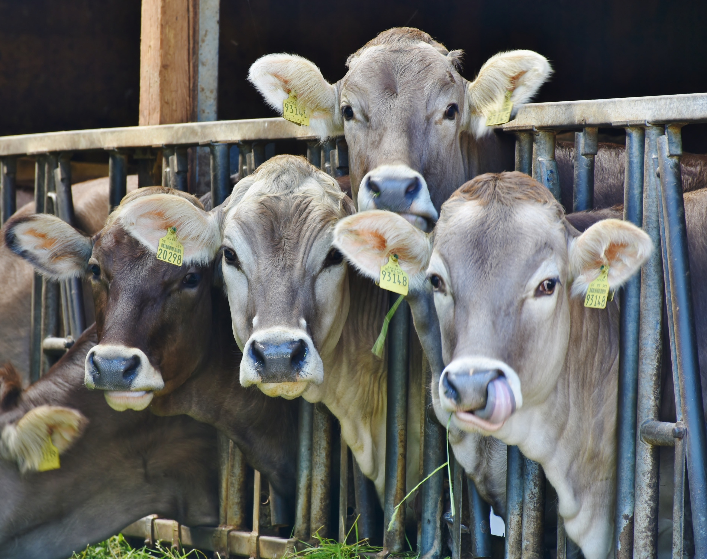

Exportadora de carne condenada por transporte degradante

Animais são submetidos a viagens de até 13 horas em condições de
confinamento, falta de ventilação e higiene precária até o Porto de
Santos, resultando em condenação judicial para a exportadora de
carne.
Uma exportadora de carne foi condenada por transportar cerca de 30
mil cabeças de gado em condições degradantes. Os animais foram
submetidos a viagens de até 13 horas, enfrentando condições de
confinamento extremo, falta de ventilação adequada e higiene
precária. A decisão judicial reforça a importância de garantir o
bem-estar animal durante o transporte e impõe sanções à empresa
responsável.
Brasil registra aumento alarmante na perda de florestas desde o
Acordo de Paris

Compromissos ambientais estão em xeque à medida que o país enfrenta
um crescimento significativo no desmatamento, levantando
preocupações sobre a preservação da biodiversidade e o combate às
mudanças climáticas.
Desde a assinatura do Acordo de Paris, o Brasil tem enfrentado um
aumento alarmante na taxa de desmatamento, resultando em uma perda
significativa de florestas. Esse cenário coloca em dúvida os
compromissos ambientais do país e gera preocupações em relação à
preservação da biodiversidade, ao impacto nas mudanças climáticas e
à reputação internacional do Brasil como guardião da Amazônia.
Medidas urgentes são necessárias para reverter essa tendência
preocupante e promover a conservação das florestas brasileiras.
Crocodilo engravida de si mesmo em fenômeno chamado de 'parto
virgem'

A partenogênese tem sido cada vez mais observada em diversas
espécies, incluindo pássaros, peixes e répteis, trazendo novas
descobertas para a ciência.
Um fenômeno raro e fascinante tem chamado a atenção dos cientistas
nos últimos anos. Conhecido como "parto virgem" ou partenogênese,
esse processo ocorre quando um animal se reproduz sem a necessidade
de fertilização por um parceiro sexual. Recentemente, um caso
intrigante de partenogênese foi observado em um crocodilo,
tornando-se o primeiro registro desse fenômeno em répteis dessa
espécie. Essa descoberta surpreendente abre novas perspectivas e
desafios para a ciência, fornecendo insights valiosos sobre os
mecanismos reprodutivos e a evolução das espécies.
Produtores afirmam que musicais enfrentam crise criativa

A indústria dos musicais enfrenta desafios criativos à medida que
adaptações de filmes dominam os palcos, segundo produtores do setor.
Produtores de musicais alertam para uma crise criativa na indústria,
atribuindo-a à prevalência de adaptações cinematográficas nos
palcos. Eles destacam a importância de investir em novas histórias e
trazer originalidade para as produções musicais, a fim de manter a
diversidade artística e atrair o público.
Preocupação cresce à medida que o país mais rico do mundo afrouxa
leis

Especialistas expressam alarme com a mudança na legislação
trabalhista, questionando o compromisso com os direitos das
crianças.
O país mais rico do mundo tem enfrentado críticas e preocupações à
medida que suas leis contra o trabalho infantil são afrouxadas.
Especialistas e defensores dos direitos das crianças levantaram
sérias questões sobre as implicações dessa mudança na legislação
trabalhista e se isso está alinhado com o compromisso do país em
proteger os direitos e o bem-estar das crianças. Essa tendência
levanta debates importantes sobre ética, responsabilidade social e a
necessidade de medidas mais rigorosas para combater o trabalho
infantil.
Escassez de cadáveres prejudica formação médica no Brasil

A falta crônica de doadores de corpos afeta a educação médica no
Brasil, levantando preocupações sobre a qualidade dos profissionais
de saúde formados no país.
A escassez de cadáveres disponíveis para estudos anatômicos tem sido
uma questão crítica nas universidades brasileiras, comprometendo a
formação de médicos e profissionais da saúde. Diante desse desafio,
instituições de ensino têm lançado campanhas de conscientização para
destacar a importância da doação de corpos à ciência. Essas
iniciativas visam sensibilizar a população sobre a relevância desse
gesto para a educação médica e o aprimoramento da prática clínica,
incentivando mais pessoas a se tornarem doadoras e contribuírem para
a formação de profissionais de saúde qualificados.
Ministério Público solicita cassação das concessões da Jovem Pan

Acusações de desinformação e incitação ao ódio levam o Ministério
Público a requerer a revogação das concessões da Jovem Pan.
O Ministério Público apresentou um pedido para a cassação das
concessões da Jovem Pan, uma das principais redes de rádio do país.
A solicitação é baseada em alegações de desinformação, disseminação
de notícias falsas e incitação ao ódio por parte da emissora. Esse
movimento levanta questões importantes sobre a responsabilidade das
mídias na disseminação de informações precisas e a promoção de um
ambiente saudável e inclusivo na esfera pública.
Nova versão em comprimido do Ozempic apresenta resultados
promissores

Pesquisas mostram que o Ozempic em formato de comprimido é eficaz na
promoção de perda de peso significativa, oferecendo uma alternativa
conveniente aos pacientes.
Estudos recentes revelam que uma nova versão em comprimido do
medicamento Ozempic apresenta resultados promissores na redução de
peso. Essa descoberta é significativa, pois o Ozempic já é conhecido
por sua eficácia no tratamento do diabetes tipo 2. A versão em
comprimido do medicamento oferece uma alternativa conveniente e
eficaz para aqueles que buscam perder peso, proporcionando uma nova
opção terapêutica no combate à obesidade.
Site falso enganava fãs com venda fraudulenta de ingressos

Além de uma página on-line criada para aplicar golpes usando o Pix,
fãs da cantora também relatam tentativas de venda de bilhetes falsos
da turnê 'The Eras Tour' por meio do WhatsApp. Especialistas
oferecem orientações para evitar prejuízos financeiros.
Fãs da cantora Taylor Swift no Brasil foram alvos de um site falso
que promovia a venda fraudulenta de ingressos para os shows da turnê
"The Eras Tour". Além disso, criminosos também tentaram vender
bilhetes falsos por meio do aplicativo de mensagens WhatsApp.
Especialistas em segurança fornecem dicas valiosas para que os fãs
evitem cair em golpes e não sofram prejuízos financeiros ao adquirir
ingressos para eventos.
Brasil dispensa teste de Covid e comprovante de vacinação

Devido ao término da emergência sanitária de importância
internacional, declarada pela OMS, a Anvisa anunciou a dispensa de
teste de Covid e comprovante de vacinação para ingresso no Brasil.
Medida foi divulgada em nota técnica em maio.
A Agência Nacional de Vigilância Sanitária (Anvisa) informou que o
Brasil não exige mais teste de Covid ou comprovante de vacinação
para entrada no país. Essa medida foi adotada após o término da
emergência sanitária de importância internacional, declarada pela
Organização Mundial da Saúde (OMS). A dispensa desses requisitos foi
divulgada por meio de uma nota técnica em maio, trazendo mudanças
nas regras de ingresso no Brasil em meio à pandemia da Covid-19.